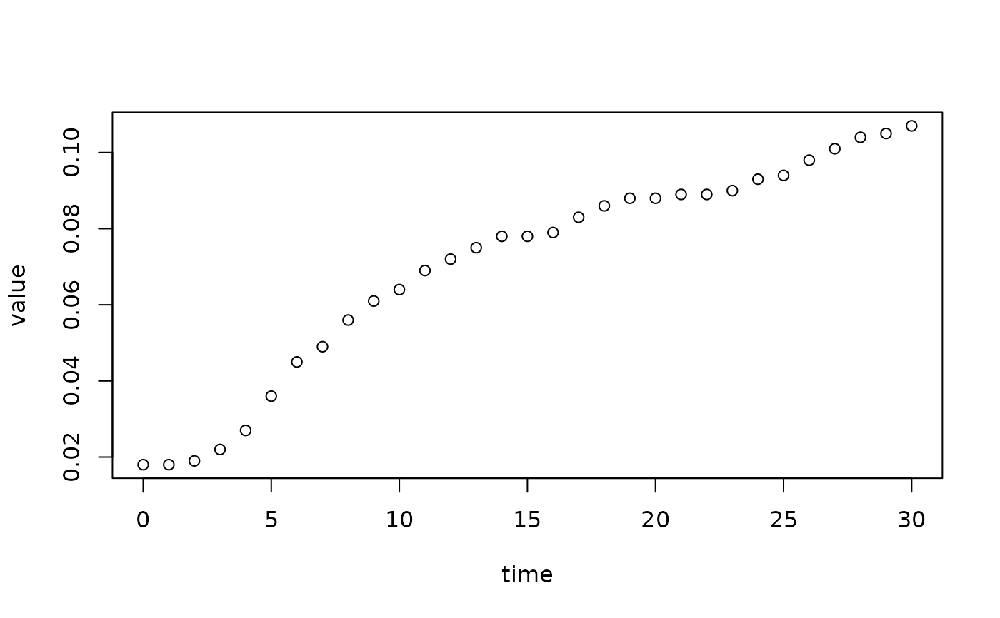
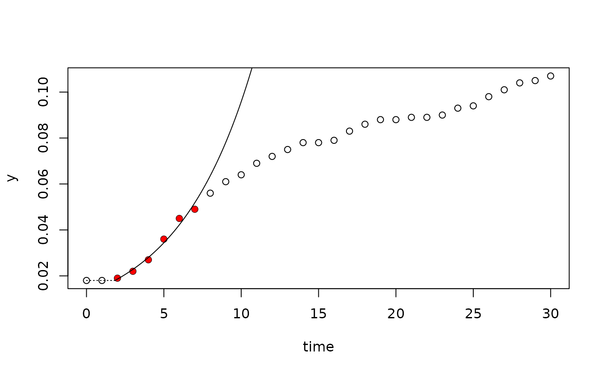
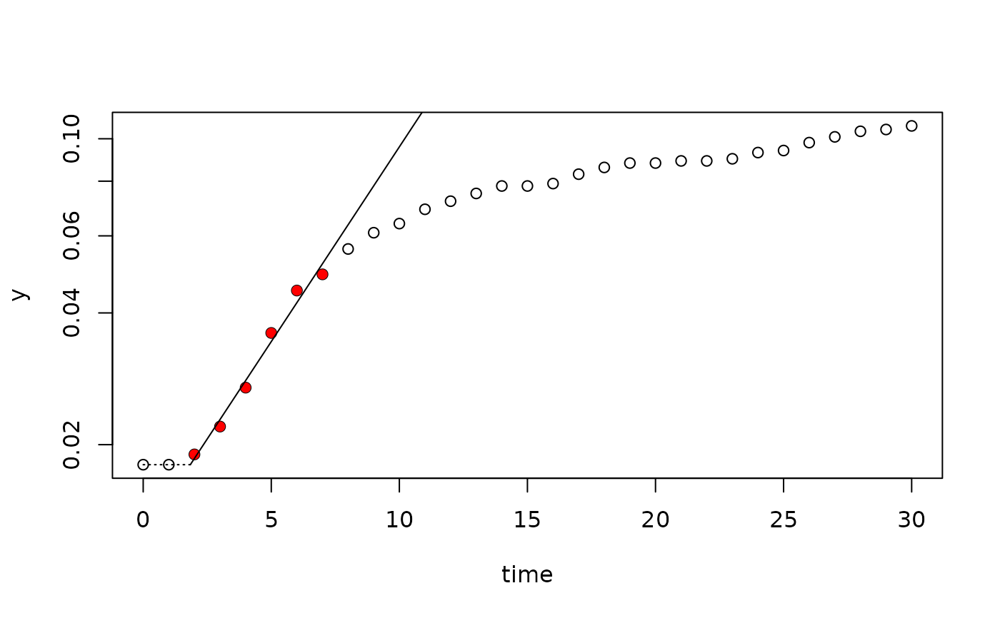
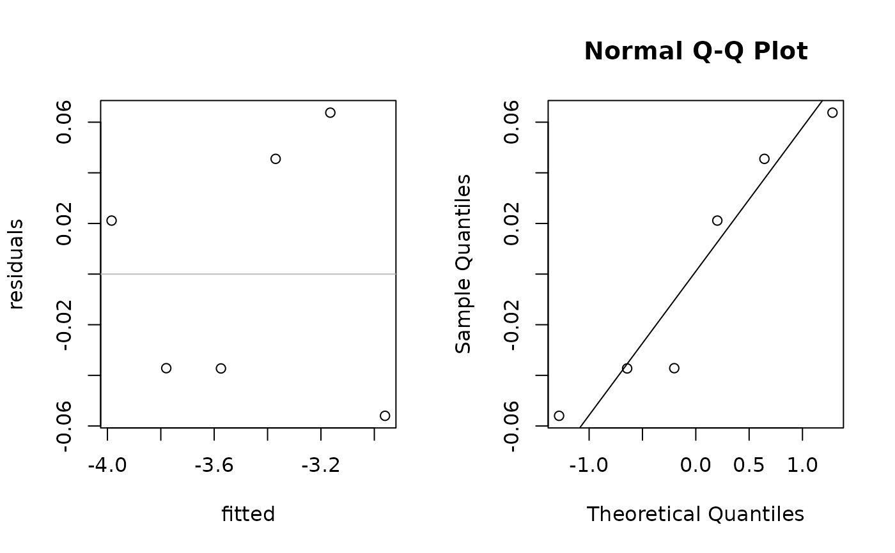
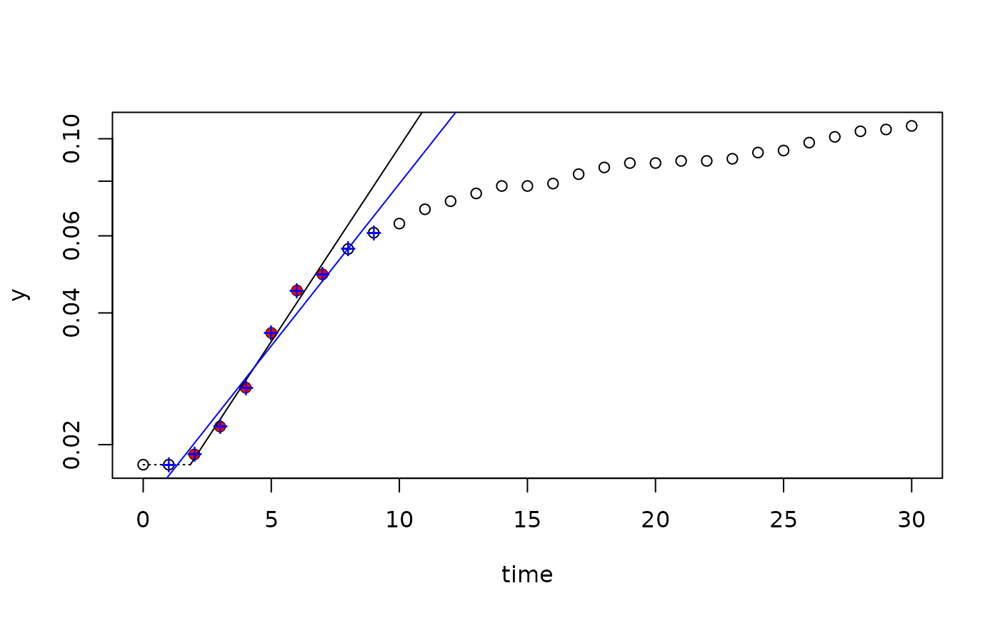
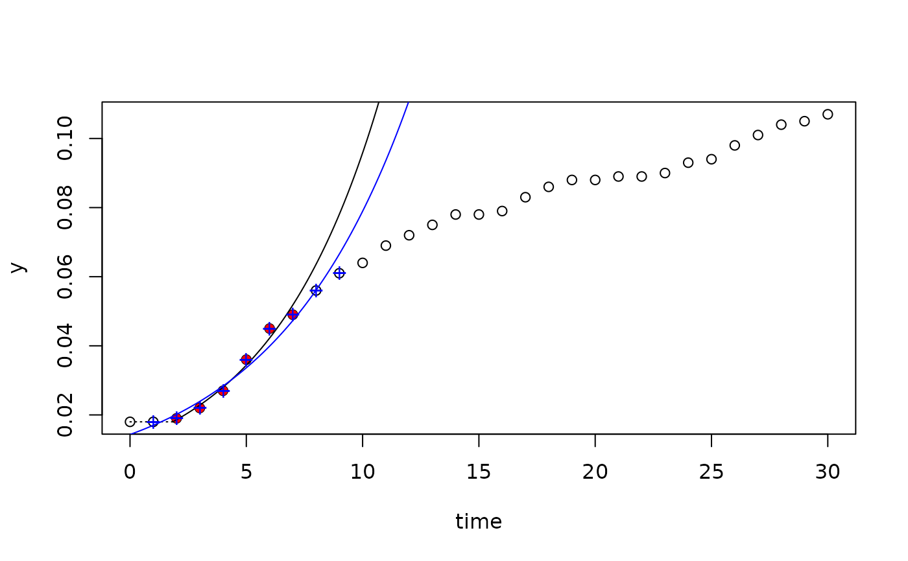

Fit Exponential Growth Model with a Heuristic Linear Method
Source:R/fit_easylinear.R
fit_easylinear.RdDetermine maximum growth rates from the log-linear part of a growth curve using a heuristic approach similar to the “growth rates made easy”-method of Hall et al. (2013).
Value
object with parameters of the fit. The lag time is currently estimated
as the intersection between the fit and the horizontal line with \(y=y_0\),
where y0 is the first value of the dependent variable. The intersection
of the fit with the abscissa is indicated as y0_lm (lm for linear model).
These identifieres and their assumptions may change in future versions.
Details
The algorithm works as follows:
Fit linear regressions to all subsets of
hconsecutive data points. If for example \(h=5\), fit a linear regression to points 1 ... 5, 2 ... 6, 3... 7 and so on. The method seeks the highest rate of exponential growth, so the dependent variable is of course log-transformed.Find the subset with the highest slope \(b_{max}\) and include also the data points of adjacent subsets that have a slope of at least \(quota \cdot b_{max}\), e.g. all data sets that have at least 95% of the maximum slope.
Fit a new linear model to the extended data window identified in step 2.
References
Hall, BG., Acar, H, Nandipati, A and Barlow, M (2014) Growth Rates Made Easy. Mol. Biol. Evol. 31: 232-38, doi:10.1093/molbev/mst187
See also
Other fitting functions:
all_easylinear(),
all_growthmodels(),
all_splines(),
fit_growthmodel(),
fit_spline()
Examples
data(bactgrowth)
splitted.data <- multisplit(bactgrowth, c("strain", "conc", "replicate"))
dat <- splitted.data[[1]]
plot(value ~ time, data=dat)

fit <- fit_easylinear(dat$time, dat$value)
plot(fit)

plot(fit, log="y")

plot(fit, which="diagnostics")

fitx <- fit_easylinear(dat$time, dat$value, h=8, quota=0.95)
plot(fit, log="y")
lines(fitx, pch="+", col="blue")

plot(fit)
lines(fitx, pch="+", col="blue")
